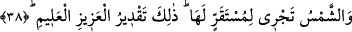

sıkıntı ve meşakkat vardır. Meşakkat ise cehennemdendir.
Fakir (Bursevî) der ki: “Gündüzün sevinç zamanı olması avâma nisbetledir. Evet
gündüz oruç tutulan bir gündüz olursa havâssa nisbetle de sevinç zamanıdır. Çünkü
onlar onunla sevinirler ve açlıktan lezzet alırlar. Çünkü açlık hakîkatte rûhun gıdâsıdır.
Nitekim gece iftar gecesi olduğunda avâma nisbetle de sevinç zamanıdır. Bir hadiste
geçtiği üzere o zaman oruçlu için bir sevinç vardır.
Büyüklerden birisi şöyle demiştir: Gece ihlâslı kimselerin nasibidir ki gece ibâdeti
ihlasla yaparlar ve gecede riyâ olmaz. Gündüz riyâkârların nasibidir ki gündüz riyâ ile
ibâdet ederler ve gündüz onlarda ihlâs olmaz.
Peygamberlerden birine vahiy geldi ki: “Beni sevdiğini iddiâ edip de gecenin
karanlığı kendisini kapladığında benden gafil olarak uyuyan kimse yalancıdır. Her seven
âşık sevdiği ile başbaşa kalmak istemez mi? İşte ben size muttaliyim, işitirim ve
görürüm.”
et-Te’vîlâtü’n-Necmiyye’de der ki: “Gece” beşeriyyet gecesi “de onlar için bir ibret
alâmetidir. Biz ondan gündüzü” rûhâniyyet gündüzünü “sıyırıp çekeriz de onlar”
yaratılmışlık zulmeti/karanlığı ile “karanlıklara gömülürler.” Çünkü Allah Teâlâ
mahlûkatı zulmette/karanlıkta yarattı. Sonra onların üzerine kendi nurundan serpiştirdi.”
38. Güneş de kendisi için belirlenen yerde akar (döner). İşte bu, azîz ve alîm olan
Allah’ın takdiridir.
“Güneş de kendisi için belirlenen yerde akar (döner).”
Bu âyet önceki âyete atfedilmiştir. Yani ilâhi tecelliler gereği mevcûdât heykelleri
üzerine akıp gelen mutlak varlık nurunun aydınlatması gibi kâinât sayfalarını aydınlatan
ve ışıtan güneş de onlar için bir ibret alâmetidir.
Sanki “Güneş nasıl bir ibret alâmeti olur?” diye sorulmuş ve cevab olarak şöyle
buyrulmuştur: “Kendisi için belirlenen yerde akar”
“ hakkında farklı vecihler vardır:
1- Başındaki lâm sebep bildirmek (ta’lîl) içindir. “ kelimesi de ism-i mekândır.
kelimesi de ism-i mekândır.
Yani güneş sene sonunda devri son bulacak olan belirli bir yere ve belirli bir sınıra
ulaşmak için akıp gider. Buna göre güneşin seyri yolcunun seferini bitirip bir menzil ve
karargâhta konaklamasına benzetilmiştir.
2- Başındaki lâm “” mânâsınadır. “ ise göğün ortasıdır. Yani güneş göğün
ortasına varana kadar akar ve orada yerleşir/karar kılar demektir. Güneşin göğün
ortasında yavaş hareket etmesi durmaya ve yerleşmeye benzetilmiştir. Yoksa gerçekten
güneşin yerleşmesi söz konusu değildir. Nitekim el-Müfredât’ta şöyle denir: “Zevâl,